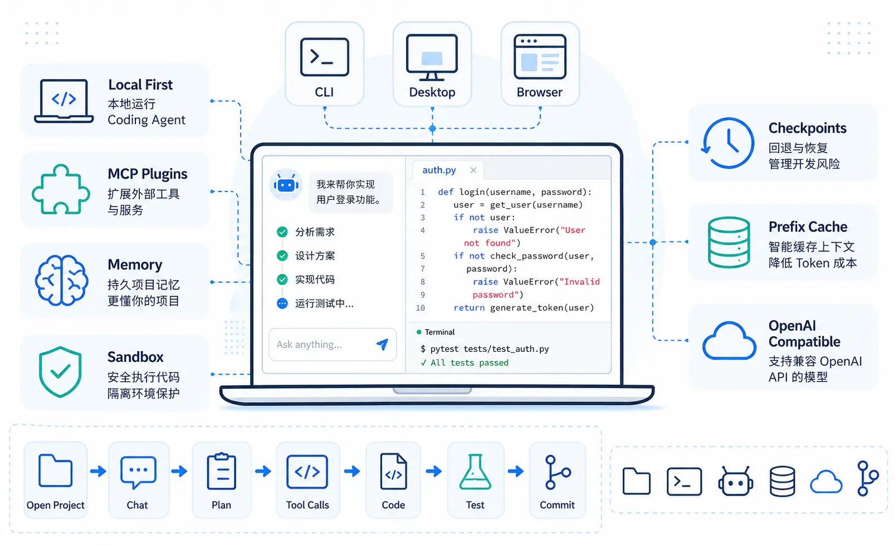
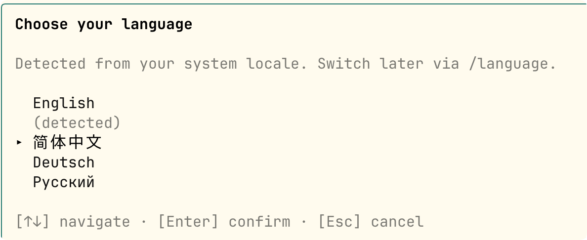
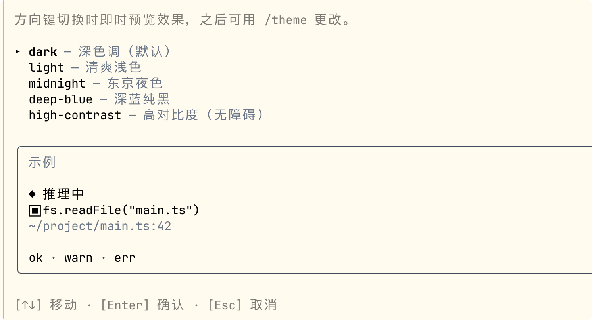
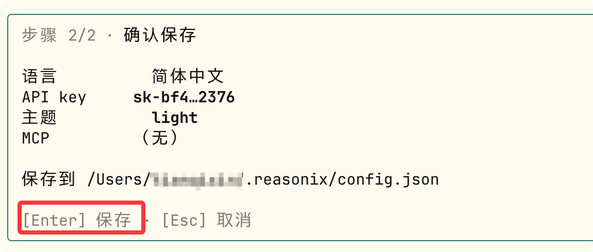
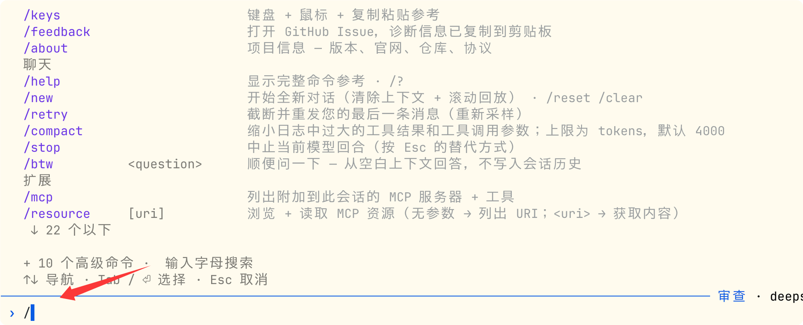
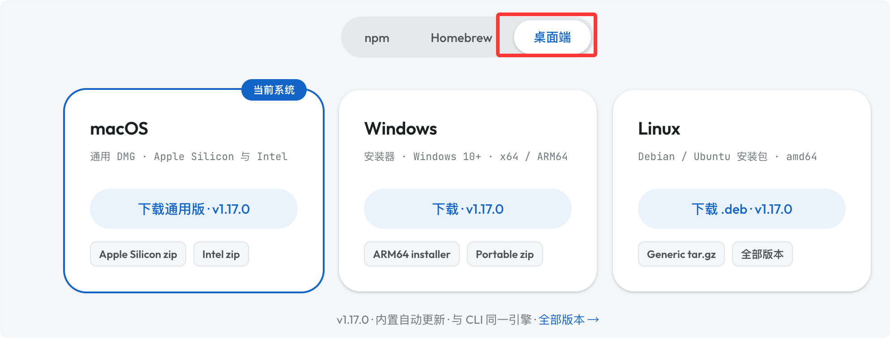

Reasonix 入门教程
Reasonix 是一个专为 DeepSeek 深度优化的开源终端 AI 编程 Agent，整个运行循环围绕 DeepSeek 的 prefix-cache 机制从零设计，目标是让 AI 编程足够便宜，可以一直挂着跑。
Reasonix的设计哲学："A coding agent that stays cheap enough to leave on."（足够便宜，可以一直挂着跑的编程 Agent）。

适合谁用？
| 场景 | 说明 |
|---|---|
| 主力使用 DeepSeek 做编程任务 | 深度适配 DeepSeek API，缓存命中率远超通用工具 |
| 关注 AI 使用成本 | 精确控制费用，支持预算上限和实时费用统计 |
| 偏好终端工作流 | 终端优先设计，diff 在 git diff 里，文件树在 ls 里 |
| 长时间连续运行 Agent | 大型代码库分析、批量重构等场景的理想选择 |
Reasonix 不做的事情
Reasonix 是有主见的，以下是它刻意不做的事：
| 不做的事 | 原因 |
|---|---|
| 多提供商灵活切换 | DeepSeek 专属，这是设计而非限制 |
| IDE 集成 | 终端优先，不追求 IDE 插件 |
| 最难推理 Benchmark | Claude Opus 在某些 benchmark 上仍然领先，解 PhD 证明题从 Claude 开始 |
| 离线/完全免费 | 需要付费的 DeepSeek API Key，离线方案看 Aider + Ollama |
使用 Reasonix 前需要获取 DeepSeek API Key，访问 platform.deepseek.com/api_keys，登录或注册账号。

点击 创建 API key，命名（如 reasonix），复制保存。
首次运行 reasonix 时会提示粘贴 API Key，输入后自动持久化，以后不需要再输。
安装：CLI 与桌面版
Reasonix 提供 CLI 和桌面版两种安装方式，下面分别介绍。
CLI 安装
系统要求：Node.js ≥ 22，支持 macOS、Linux、Windows（PowerShell、Git Bash、Windows Terminal）。
全局安装（推荐日常使用）：
npm install -g reasonix
免安装体验（npx，始终使用最新版）：
# 进入项目目录，直接使用 npx 运行 cd my-project npx reasonix code
验证与健康检查，查看版本号：
reasonix --version
健康检查：Node 版本、API Key 可达性、MCP 配置：
reasonix doctor
升级到最新版：
reasonix update
通过交互式向导完成配置，始化 API Key、语言、主题等配置。
reasonix setup
选择语言：

选择主题：

输入 DeepSeek API key：

回车保存：

接下来进入项目 vibe-coding-runoob，就可以开始使用了：
cd vibe-coding-runoob
输入以下命令开始使用：
reasonix

输入 / 查看支持的命令：

桌面版安装
桌面版是基于 Tauri 的原生客户端，多标签，右侧面板显示 Agent 本次会话读取或编辑过的文件。
底部显示与 CLI 顶栏相同的费用/缓存/Token 计数器。使用相同的 DeepSeek API Key 和 ~/.reasonix 配置。
桌面版内置 Node 运行时，无需单独 npm install。
从官网（https://reasonix.io/#start）下载对应平台安装包：

| 平台 | 文件格式 |
|---|---|
| macOS | Reasonix_x.x.x_universal.dmg |
| Windows | Reasonix_x.x.x_x64-setup.exe |
| Linux | Reasonix_x.x.x_amd64.AppImage 或 .deb |
下载后，双击安装，然后输入 API key：

启动后，桌面也是经典的左右布局：

输入框输入信息就可以开始对话了：

点击右上角图标，可以打开三栏布局：

三种协作方式：

常用设置，包含主题、外观、语言、插件、MCP 等：

首次启动注意事项：
macOS 第一次启动会触发 Gatekeeper 拦截。一次性解除：在终端执行 xattr -dr com.apple.quarantine /Applications/Reasonix.app，或右键点击 → 打开 → 确认。
Windows：SmartScreen 显示「未知发布者」，点击「更多信息 → 仍要运行」。Linux：.deb 和 .AppImage 直接运行，无需额外步骤。
桌面版目前是 Prerelease 状态，循环和协议与 CLI 完全相同，但 UI 仍在打磨中，安装包暂未代码签名。CLI 是主要开发界面，任何 CLI 中有的功能桌面版的输入框都能用。
第一次运行
进入项目目录，启动 Reasonix 编程模式。
cd your-project # 启动编程模式（以下两种方式等价） reasonix code # 或者直接 reasonix
试着发送第一条消息：
分析这个项目的目录结构，告诉我主要模块的职责
Reasonix 会调用 list_directory、read_file 等工具扫描项目，输出结构化分析。
无头运行（管道友好）
# 单次执行，结果流式输出到 stdout reasonix run "统计 src 目录中每个 .ts 文件的行数，按从多到少排序" # 结合 git diff 使用 git diff HEAD~1 | reasonix run "给这段 diff 写一个 Conventional Commits 格式的 commit message"
两种模式：code 与 chat
Reasonix 提供两种运行模式，适用于不同的使用场景。
| 能力 | code | chat |
|---|---|---|
| 文件系统工具 + edit_file | ✓ | — |
| SEARCH/REPLACE → /apply 审查 | ✓ | — |
| Shell 工具（受权限控制） | ✓ | — |
| Plan 模式、/todo、/skill new、/mcp add | ✓ | — |
| 记忆（remember / recall_memory） | 项目级 + 全局 | 仅全局 |
| MCP 服务器、网页搜索、ask_choice | ✓ | ✓ |
| 会话作用域 | 按目录隔离 | 共享默认 |
code 是默认模式，也是唯一有文件系统和 shell 工具的模式，从这里开始。
chat 是更轻量的无磁盘访问模式——用于需要思考伙伴但不想让 AI 碰文件时，或者挂载 MCP 做信息检索时。
chat 模式系统 Prompt 更短，Token 成本更低。
Reasonix 把文件系统工具作用域绑定到启动目录，通过 --dir 重定向。中途切换目录不受支持（记忆路径会与旧的根路径混乱）——退出后重新启动。
# 在指定目录下启动 code 模式 reasonix code --dir /path/to/other-project
编辑门控：SEARCH/REPLACE 预览流程
这是 Reasonix 最重要的安全机制——AI 永远不会在你不知情的情况下修改文件。
三种编辑门控模式
通过 /mode 或 Shift+Tab 切换：
| 模式 | 行为 |
|---|---|
| review | 每次编辑都显示预览，y/n 逐块确认 |
| auto（AUTO） | 自动应用，但在 5 秒内可以按 u 撤销 |
| yolo | 直接写盘，无任何确认 |
典型编辑流程（review 模式）
1. 你：帮我把 getUserById 函数加上错误处理
2. Reasonix 分析代码，提出 SEARCH/REPLACE 修改方案：
─── src/services/user.ts ───
- async function getUserById(id: string) {
- const user = await db.users.findOne({ id });
- return user;
- }
+ async function getUserById(id: string): Promise<User | null> {
+ try {
+ const user = await db.users.findOne({ id });
+ return user ?? null;
+ } catch (error) {
+ logger.error({ id, error }, 'getUserById failed');
+ throw new AppError('USER_FETCH_FAILED', 500);
+ }
+ }
3. 你：/apply ← 确认应用，文件写盘
/discard ← 丢弃不应用
/walk ← 逐块 git-add-p 风格审查
编辑历史
# 列出本次会话的所有编辑批次 /history # 查看某次编辑的 diff /show <id> # 回滚最近一次 /apply /undo
Plan 模式：只读分析门
Plan 模式让 Reasonix 进入只读状态——AI 只能读文件、分析代码、提出方案，不能写文件，不能执行命令，直到你明确批准计划。
开启与工作流
/plan ← 切换 Plan 模式（顶栏出现 PLAN MODE 标记） 你：我想把这个 Express 应用迁移到 Fastify，先给我分析影响范围 AI 分析后提交计划： ✓ 需要替换 5 个路由文件 ✓ 3 个中间件需要适配 ✓ 12 个测试需要更新 预计改动：43 个文件，约 800 行 plan-confirm 模态框出现 → Ctrl+P 展开/折叠完整计划详情 → 批准后 AI 进入执行模式 → 执行过程中每次修改仍走编辑门控
什么时候用 Plan 模式
| 场景 | 说明 |
|---|---|
| 大型改动 | 任务影响超过 5 个文件 |
| 架构变更 | 框架迁移、数据库切换、API 重设计 |
| 团队协作 | 需要对齐方案的场景 |
| 不确定范围 | 想先预览 AI 会动哪些地方 |
模型与成本控制
Reasonix 提供灵活的模型切换和成本控制机制。
切换预设
# 默认 smart（v4-flash + max 推理） reasonix code # 快速任务，v4-flash + high 推理，成本最低 reasonix code --preset fast # 复杂任务，v4-pro + max 推理 reasonix code --preset max
会话中切换：
/preset auto # 开启自动升级逻辑（flash 优先，失败升级 pro） /preset flash # 锁定 flash /preset pro # 锁定 pro
/pro 单次升级
用户输入 /pro，下一轮使用 v4-pro，然后自动解除。没有预设切换，没有忘记恢复。
激活状态显示为顶栏的黄色 "pro armed" 标记。
> /pro > 解释这段 Rust 异步代码里的生命周期标注为什么必须这样写 # 回答完成后自动恢复 v4-flash
失败自动升级
每轮计数可见的「flash 力不从心」事件：edit_file/write_file 的 SEARCH-not-found 错误，以及 ToolCallRepair 触发。
一旦计数达到 3，当前轮次的剩余部分自动切换到 v4-pro，并通过黄色警告行公告——没有静默成本。
设置会话预算上限
# 本次会话上限 $0.50 reasonix code --budget 0.50
/budget 0.20 # 会话中设置 $0.20 上限 /budget off # 取消上限
到达 80% 时警告，到达 100% 时拒绝下一轮。
上下文压缩与费用查询
/compact # 手动将旧轮次折叠为摘要（缓存安全）
# 上下文达到 50% 时自动触发，这是手动触发
/cost # 上一轮花费
/cost 这段文字 # 预估发送这段文字的成本
/stats # 跨会话成本仪表板（今天/本周/本月/所有时间）
技能（Skills）：Markdown 可复用剧本
技能是 AI 可以按需调用的 Markdown 剧本，没有远程注册表——直接编写，立即生效。
创建技能
# 项目级技能：<project>/.reasonix/skills/code-review.md /skill new code-review # 全局技能：~/.reasonix/skills/deploy-check.md /skill new deploy-check --global
技能文件格式
文件路径：.reasonix/skills/code-review.md
--- description: 对当前改动做系统性代码审查，按 P0-P3 优先级分级 runAs: subagent tools: [read_file, list_directory, search_content] --- 分析 `git diff HEAD` 中的所有改动。 对每个发现的问题，按如下格式输出： **[P0]** 严重（阻止合并）：安全漏洞、逻辑错误、数据丢失风险 **[P1]** 重要（强烈建议修复）：性能问题、错误处理缺失 **[P2]** 一般（建议修复）：代码质量、可读性 **[P3]** 改进（可选）：最佳实践、未来优化 每条包含：文件名和行号 · 问题描述（一句话）· 修复建议。 最后给出总体评估：是否可以合并，以及最重要的三个改进点。
runAs: subagent 让技能在隔离的子 Agent 循环中执行，主会话的上下文不会膨胀。
调用与管理
/skill code-review # 调用技能 /skill list # 列出所有可用技能 /skill show code-review # 查看技能内容
兼容 Claude 格式的技能
<project>/.claude/skills/<name>/SKILL.md 和 ~/.claude/skills/ 也会被自动读取。
与 Reasonix 原生路径并存，所以输出 Claude 格式技能的工具可以直接使用。
# 写入 .claude/skills/openspec-*/SKILL.md npx openspec init --tools claude # 在 Reasonix 中直接调用 /skill openspec-propose <task>
记忆（Memory）：跨会话上下文持久化
Reasonix 有四种记忆类型，用于跨会话保留上下文。
| 类型 | 作用域 | 用途 |
|---|---|---|
| user | 全局 | 你的偏好、工作习惯 |
| feedback | 全局 | AI 的错误或成功经验 |
| project | 项目级 | 项目约定、架构决策 |
| reference | 可配置 | 固定参考资料 |
手动写入
/remember 这个项目用 pnpm 而不是 npm /remember 所有 API 错误统一走 AppError 类，不要 throw 原生 Error /remember Turso 批量写入并发时需要加锁，见 src/db/mutex.ts
管理记忆
/memory list # 查看所有记忆 /memory show <id> # 查看某条记忆详情 /memory forget <id> # 删除某条记忆 /memory clear # 清空所有记忆
项目记忆文件（REASONIX.md）
在项目根目录创建 REASONIX.md，每次会话开始时自动加载。
# 扫描项目，自动生成 REASONIX.md 基线 /init # 强制重新生成（覆盖已有文件） /init force
或者手动创建：
# 项目：runoob-backend ## 技术栈 - Runtime：Bun 1.2（禁止使用 Node.js 专属 API） - 框架：Hono - 数据库：Turso（libSQL） ## 编码规范 - 所有函数必须有 JSDoc 类型注解 - 错误统一用 AppError 类 - 禁止 any 类型 ## 已知陷阱 - Turso 并发写入需要互斥锁，见 src/db/mutex.ts
MCP 集成：连接外部工具
MCP 服务器支持 stdio、SSE、Streamable HTTP 三种传输方式。
同一个配置格式同时适用于 config.json 和 --mcp 命令行参数。
会话中动态添加
/mcp # 打开 MCP 中心（在线 + 市场标签页） /mcp add stdio:npx,-y,@modelcontextprotocol/server-github
命令行挂载
# 通过命令行参数挂载 MCP 服务器 reasonix code --mcp stdio:npx,-y,@modelcontextprotocol/server-github
配置文件预设（推荐）
文件路径：~/.reasonix/config.json
实例
"mcp": {
"servers": {
"github": {
"transport": "stdio",
"command": "npx",
"args": ["-y", "@modelcontextprotocol/server-github"],
"env": {
"GITHUB_PERSONAL_ACCESS_TOKEN": "${GITHUB_TOKEN}"
}
},
"postgres": {
"transport": "stdio",
"command": "npx",
"args": ["-y", "@modelcontextprotocol/server-postgres"],
"env": {
"POSTGRES_CONNECTION_STRING": "postgresql://localhost/mydb"
}
},
"searxng": {
"transport": "sse",
"url": "http://localhost:8080/mcp/sse"
}
}
}
}
浏览 MCP 工具
/mcp list # 列出已连接的服务器 /resource # 浏览 MCP 资源 /prompt # 浏览 MCP 提示词模板
Hooks：生命周期自动化
Hooks 支持四个生命周期事件，PreToolUse 可以通过非零退出码拦截工具调用。
支持的事件
| Hook | 触发时机 | 特殊能力 |
|---|---|---|
| PreToolUse | 工具调用前 | 非零退出 = 拒绝调用 |
| PostToolUse | 工具调用后 | 日志/格式化 |
| UserPromptSubmit | 用户提交消息时 | 注入额外上下文 |
| Stop | 会话结束时 | 摘要/清理 |
配置示例
文件路径：~/.reasonix/config.json
实例
"hooks": {
"PostToolUse": [
{
"matcher": { "tool": "edit_file" },
"command": "npx biome format --write {{file}} 2>/dev/null || true",
"description": "编辑文件后自动格式化"
}
],
"PreToolUse": [
{
"matcher": { "tool": "run_command" },
"command": "echo '$(date): {{command}}' >> ~/.reasonix/audit.log",
"description": "记录所有 Shell 命令到审计日志"
}
],
"Stop": [
{
"command": "reasonix stats --session last >> ~/.reasonix/sessions-log.txt",
"description": "会话结束后保存统计"
}
]
}
}
查看与重载
/hooks # 列出所有已配置的 hooks /hooks reload # 热重载 hooks 配置（无需重启）
会话管理与 Checkpoint
Reasonix 提供完善的会话管理和文件快照功能。
会话管理
实例
reasonix sessions
# 打开指定会话
reasonix sessions my-project
# 删除 30 天前的会话
reasonix prune-sessions --days 30
会话中的命令：
/sessions # 列出已保存会话（当前标记 ▸） --session <name> # 启动时绑定到具名会话 --continue # 恢复该工作区最近一次会话 --new # 强制新建会话（即使已有现成的） --no-session # 临时运行，不持久化任何内容
Checkpoint（文件快照）
/checkpoint # 为本次会话碰过的所有文件创建快照 /checkpoint my-snapshot # 创建具名快照 /checkpoint list # 列出所有快照 /checkpoint forget <id> # 删除快照 /restore my-snapshot # 恢复到指定快照
回放会话（调试用）
# 重新渲染 JSONL 会话记录，不调用模型 reasonix replay <transcript> # 对比两个会话的成本/缓存/Token 差异 reasonix diff <a> <b> # 跟踪某个会话的事件日志 reasonix events <name>
语义索引与网页搜索
Reasonix 支持为项目建立本地向量索引，以及配置网页搜索引擎。
语义索引
为项目建立本地向量索引，支持语义搜索，无需精确关键词匹配。
# 构建索引（需要 Ollama 或 OpenAI 兼容 Embedding 端点） reasonix index
配置（~/.reasonix/config.json）：
实例
"index": {
"endpoint": "http://localhost:11434/api/embeddings",
"model": "nomic-embed-text"
}
}
建立后在会话中使用：
> 找出所有和用户认证相关的代码 # 触发 semantic_search 工具，基于语义而非关键词检索
网页搜索
默认使用 Mojeek，通过 /search-engine（或 /se）切换。
/search-engine mojeek # 默认，隐私友好 /search-engine searxng # 自托管 SearXNG 实例 /search-engine metaso # 秘塔搜索（中文内容优化）
配置自托管 SearXNG：
实例
"search": {
"engine": "searxng",
"searxngUrl": "http://localhost:8888"
}
}
QQ 频道远程控制
Reasonix 可以把 QQ 作为现有 chat 和 code 会话的远程通信频道，不是独立的运行模式。
先启动会话，然后连接 QQ。
# 1. 先启动会话 reasonix code # 2. 会话中连接 QQ /qq connect # 首次使用引导输入 App ID 和 App Secret /qq status # 查看连接状态 /qq disconnect # 断开连接
连接后，斜杠命令、确认提示和 AI 回复都可以通过 QQ 进行，无需在终端输入。后续的 chat / code 会话会自动启动 QQ 频道。桌面版用户可以在 Settings → General → QQ Channel 中配置。
桌面版深度指南
桌面版在 CLI TUI 基础上增加了更多可视化功能。
界面布局
桌面版在 CLI TUI 基础上增加了三个主要面板：
| 面板 | 功能 |
|---|---|
| 右侧文件面板 | 实时显示 Agent 本次会话读取或编辑过的文件列表，点击可直接查看内容 |
| 底部状态栏 | 与 CLI 顶栏完全对应——费用计数器、缓存命中率、当前模型、Token 消耗 |
| 多标签页 | 可同时开多个项目会话，标签间独立切换 |
与 CLI 的关系
桌面版和 CLI 共享同一套配置（~/.reasonix/config.json）和 API Key。
在 CLI 里保存的技能、记忆、MCP 配置，桌面版立即可用，反之亦然。
CLI 中能用的所有斜杠命令，桌面版的输入框也完全支持。包括 /plan、/skill、/mcp、/apply、/pro 等。
桌面版特有能力
| 能力 | 说明 |
|---|---|
| 图形化文件树浏览 | 右侧面板可视化浏览项目文件 |
| 多标签工作区管理 | 更友好的多项目切换体验 |
| 图形化 QQ 配置 | Settings → General → QQ Channel |
| 内置 Node 运行时 | 用户无需单独安装 Node.js |
案例一：新项目探索与代码阅读
场景：接手一个陌生的 TypeScript 后端仓库，需要快速理解架构，找到关键模块。
使用 chat 模式（不动文件，节省成本）：
# 进入项目目录，使用 chat 模式并挂载 MCP cd unknown-project reasonix chat --mcp stdio:npx,-y,@modelcontextprotocol/server-github
对话过程演示：
你：用 100 字以内描述这个项目是做什么的
AI：[调用 read_file 读 README.md 和 package.json]
这是一个多租户 SaaS 订阅管理服务，基于 Node.js + PostgreSQL，
处理订阅计划创建、支付 Webhook 和使用量追踪。
你：找出最核心的 3 个业务逻辑文件，各用一句话说明职责
AI：[调用 list_directory、search_content 扫描 src/]
1. src/billing/subscription.ts — 订阅生命周期管理（创建/升级/取消）
2. src/webhooks/stripe.ts — Stripe 事件处理和订阅状态同步
3. src/usage/tracker.ts — API 调用量统计和超限检测
你：src/billing/subscription.ts 里的 cancelSubscription 函数，
它做了什么，有没有可能的竞态条件？
AI：[调用 read_file 精确读取该函数]
该函数...
潜在竞态：如果同时收到两次取消请求，
第 47 行的状态检查和第 52 行的数据库更新之间存在时间窗口...
生成项目记忆：
你：把刚才了解的内容写成 REASONIX.md，我切到 code 模式后继续工作 AI：[生成 REASONIX.md 草稿] 你：/apply
案例二：多文件重构（含 Plan 模式）
场景：把现有 REST API 的错误处理从 throw new Error() 统一迁移到自定义 AppError 类。
启动并进入 Plan 模式：
# 启动 code 模式 reasonix code
你：/plan
你：我要把所有 throw new Error() 改成 throw new AppError()。
AppError 类在 src/errors.ts，接受 code、message、statusCode 三个参数。
先分析影响范围，不要做任何修改。
AI：[调用 search_content 搜索 "throw new Error"]
找到 23 处需要迁移的调用，分布在 8 个文件：
- src/routes/users.ts (5 处)
- src/routes/billing.ts (4 处)
- src/services/auth.ts (7 处)
...
建议迁移顺序：先处理 services 层（无 HTTP 依赖），
再处理 routes 层，最后更新测试。
预计改动：23 处调用，约 150 行代码变更。
[plan-confirm 弹出]
→ Ctrl+P 展开完整文件清单
你：批准
AI：[进入执行模式，依次修改文件]
每次改动都会弹出 SEARCH/REPLACE 预览
你：/apply ← 每批次确认
执行完成后：
你：/commit
AI：[分析所有改动，生成 commit message]
"refactor: migrate error handling to AppError class
Replace 23 bare Error throws with typed AppError instances
across 8 files, improving error observability and HTTP status
code consistency."
你：确认提交
案例三：Bug 定位与修复
场景：生产环境出现一个偶发的 "Cannot read properties of undefined" 错误，日志里只有堆栈追踪。
实例
"env": {
"GITHUB_PERSONAL_ACCESS_TOKEN": "${GITHUB_TOKEN}"
}
}
}
},
"permissions": {
"shell": {
"allow": [
"npm test",
"npm run ",
"git ",
"pnpm ",
"cat ",
"ls ",
"grep "
]
}
},
"hooks": {
"PostToolUse": [
{
"matcher": { "tool": "edit_file" },
"command": "npx biome format --write {{file}} 2>/dev/null || true"
}
]
},
"search": {
"engine": "searxng",
"searxngUrl": "http://localhost:8888"
},
"index": {
"endpoint": "http://localhost:11434/api/embeddings",
"model": "nomic-embed-text"
},
"parallelMax": 4
}
权限白名单规则
使用精确前缀匹配：允许 "git " 意味着允许所有以 "git " 开头的命令（注意尾部空格）。不在白名单中的命令每次都需要手动确认。
与其他工具对比
以下是 Reasonix 与其他主流 AI 编程工具的对比：
| 维度 | Reasonix | Claude Code | Cursor | Aider |
|---|---|---|---|---|
| 后端 | DeepSeek（专属） | Anthropic | OpenAI/Anthropic | 任意（OpenRouter） |
| 许可证 | MIT | 闭源 | 闭源 | Apache 2 |
| 成本特征 | 每任务成本低 | 高端定价 | 订阅 + 用量 | 视模型而定 |
| DeepSeek prefix-cache | 专门设计 | 不适用 | 不适用 | 偶发命中 |
| 内置 Web Dashboard | 是 | — | IDE 内 | — |
| 可配置网页搜索引擎 | /search-engine | — | — | — |
| 持久的按工作区会话 | 是 | 部分 | 不适用 | — |
| Plan 模式 · MCP · Hooks · Skills | 全有 | 全有 | 有 | 部分 |
资源与社区
以下是 Reasonix 的官方资源和社区链接。
官方资源
| 资源 | 链接 |
|---|---|
| GitHub | esengine/DeepSeek-Reasonix |
| 官网 | https://reasonix.io/ |
| 文档 | https://reasonix.io/docs/ |

点我分享笔记